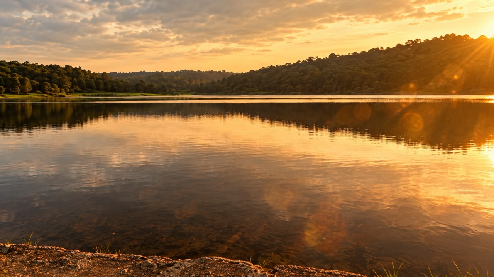
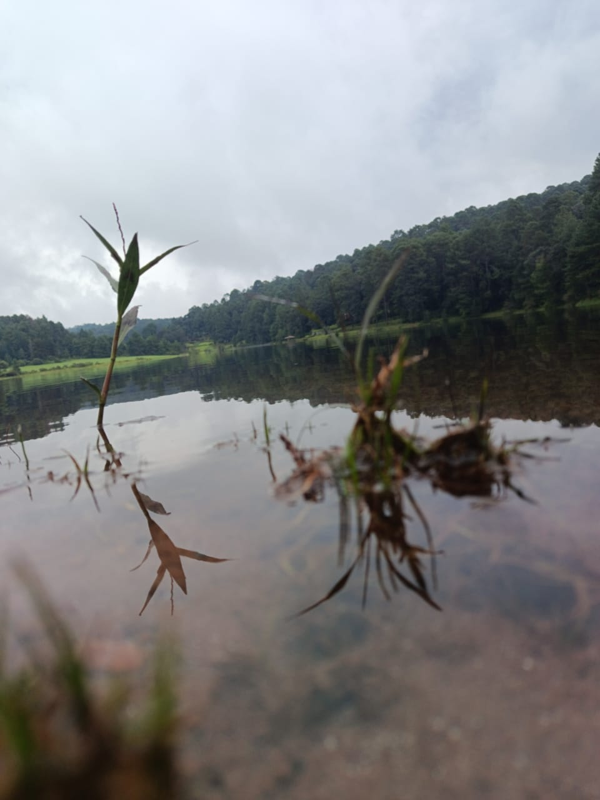

Laguna Negra se encuentra en El Pinal del Marquesado, en el municipio de Valle de Bravo, Estado de México. Es una laguna de montaña rodeada de bosque, a unos 15 minutos de Avándaro, por el camino que sube hacia Cerro Gordo."
Al caer la tarde, el cielo se tiñe de naranja, dorado y rosa, y las colinas boscosas se reflejan en el agua como en un espejo. En la orilla, el agua poco profunda deja ver las piedras del fondo y las pequeñas ondas que atrapan la luz. Es un lugar ideal para la fotografía de paisaje y para disfrutar la tranquilidad de la naturaleza.

En días nublados, Laguna Negra muestra otra cara. La luz suave resalta el verde del prado y la ladera cubierta de bosque, que se reflejan en el agua. En primer plano, las plantas acuáticas y los juncos de la orilla aportan textura y profundidad a la imagen.
Esta zona de Valle de Bravo es muy visitada por quienes buscan senderismo, ciclismo de montaña, camping o simplemente un descanso lejos del ruido. Se recomienda llevar ropa abrigadora e impermeable, calzado cómodo para terreno irregular y respetar el entorno natural, sin dejar basura.
Gastronomia Belleza natural